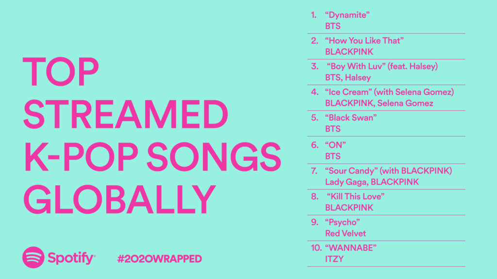

This study will use a method specific to music theory that can arguably be classified as archival research. Music analysis papers often include transcriptions of the relevant instrumental and voice parts as well as the relevant sections of the song as visual aids. It is never specified where these transcriptions come from, so I assume the author(s) create them themselves. Likewise, I will be listening to multiple K-Pop songs from different eras, transcribing them myself, then analyzing whatever chord loops I find.
I will examine the 10 most popular songs from each year since 1992, searching for chord loops. For each one I find, I will do my best to determine their origin (whether they are rare, entirely new, or borrowed or sampled from Western pop and hip-hop music). To help with this identification, I may also enlist the help of fellow scholars who are more familiar with a certain genre and its idioms and conventions than I am.
I am focusing on the most popular songs for their relative ease of access as a non-Korean speaker. However, this focus on the most popular music should also reflect which musical trends were popular at that point in time. While lesser-known and underground artists are often freer to innovate (due to not having to worry as much about commercial success), focusing on that topped the charts will hopefully help show when those innovations became part of the mainstream and a more permanent fixture of K-Pop songwriting.
Results indicating that many or most songs include chord loops common in Western music early on but fewer and fewer songs continue to do so over time would support my hypothesis. This would most likely happen in conjunction with a rise in the number of new or unique loops as well, further supporting my hypothesis.
